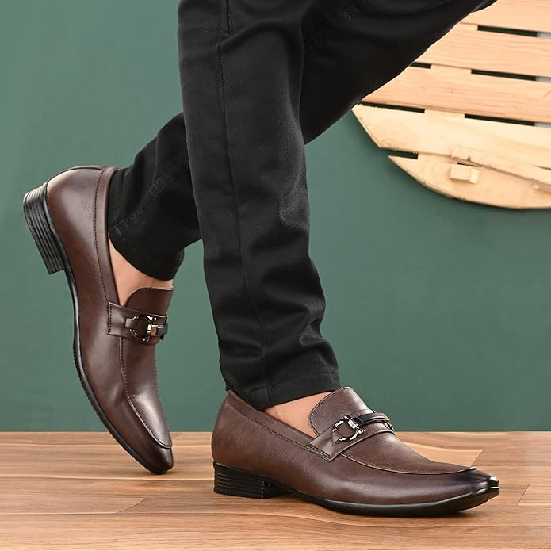
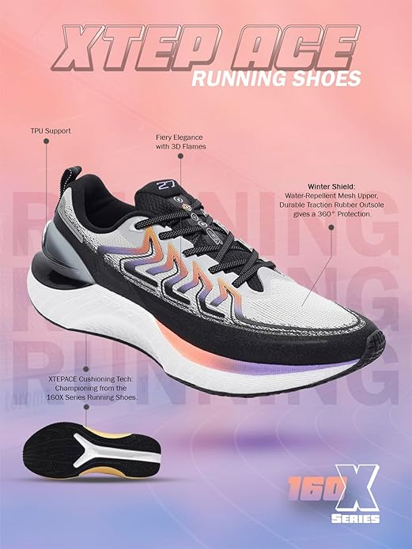

FAUSTO Men's Formal Office Dress Lace Up Derby Shoes

| Specification Name | Specification Value | |
| Material type | OTHER | |
| Closure type | Lace-Up | |
| Water resistance level | Not Water Resistant | |
| Style | Oxford | |
| Outer material | Polyurethane (PU) |
Crafted with quality material and soft with a extra cushion foot-bed for providing a day long comfort. This shoe is to ensure real cozy fit and enhances the personality and complete the look.
Centrino Mens 2807-1 Uniform Dress Shoe
| Specification Name | Specification Value | |
| Material type | Synthetic | |
| Closure type | Pull-On | |
| Heel type | cone heel | |
| Water resistance level | not Water resistance | |
| Sole material | Leather | |
| Style | Slip On |
>Centrino Comfort Shoe is made up of full breathable upper and cushioned comfortable lining. This is the true combination of style and class with its clean lines and timeless style.These SHoes are full of comfort and can wear them all day long as the insoles are filled with extra cushioned.It gives your heel a break with every step while resisting moisture and inhibiting bacterial growth Centrino Shoe have a durable and long-lasting build quality. These all day wear Shoes are nicely finished products and are super comfy.
Campus Men's Artemis Running Shoes
| Specification Name | Specification Value | |
| Material type | Mesh | |
| Closure type | Lace-up | |
| Heel type | Flat | |
| Water resistance level | not Water resistance | |
| Sole material | Ruber | |
| Style | Sneaker |
If you are looking for comfortable shoes for men, this pair is perfect for you. They have a knitted vamp upper that feels soft on your skin and has a supportive design that keeps your feet stable. You can adjust the fit and secure your feet with the lace-up closure. These shoes are suitable for work or leisure, and any occasion in between!Introducing our top pick for stylish and casual men's sneakers! These sneakers boast a thick sole, ensuring optimal comfort, support, and a bouncy stride. The soft and cozy feel adds to their appeal, making them the perfect choice for everyday wear.